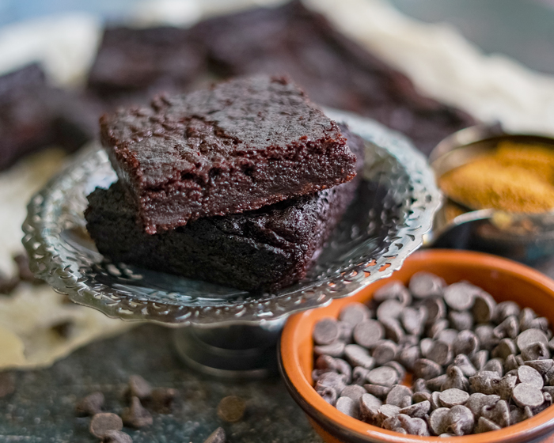

Easy and Delicious Fudge Brownies
Today's dish was my introduction to baking.
One of the first delectable desserts that I made was brownies, which I sold to my middle school classmates to
make an extra buck.
Ever since then, I knew that this recipe deserved a gold star for simplicity and quality.
If I could make it good enough to sell like gold as a greedy 10 year old, then you can too!
- 1 cup all purpose flour
- 2 1/2 sticks unsalted butter
- 6 large eggs
- 8 oz semisweet chocolate, chopped
- 3/4 cup unsweetened cocoa powder
- 2 cups sugar
- 1/2 cup brown sugar
- 2 teaspoons vanilla extract
- Grease 9x13-inch pan with butter and line with parchment, then apply butter to the parchment
- Combine chopped chocolate and 1/4 cup of cocoa powder in a bowl
- Cook butter in a small saucepan until it reaches a vigorous simmer, making sure it's evenly melted. Pour
into the chocolate mixture quickly, and whisk until smooth and melted
- In a large bowl combine sugar, brown sugar, vanilla extract, and eggs. beat with an electric hand mixer
on
high until light and fluffy, about 10 minutes
- With the mixer on, pour in slightly cooled chocolate and butter mixture and blend until smooth
- Preheat oven to 350F
- Sift in the flour and remaining cocoa powder and use a rubber spatula to gently fold until just combined
- Pour the batter into the prepared baking pan and smooth the top with a spatula. Bake until lightly
puffed on
top, about 20 minutes
- Remove the baking pan from the oven using oven mitts or kitchen towels, then lightly drop the pan on a
flat
surface 1-2 times until the brownies deflate slightly
- Return the pan to the oven and bake until a wooden skewer inserted into the center of the brownies comes
out
fudgy but the edges look cooked through, about 20 minutes more
- Let brownies cool on a cooling rack
- Use parchment paper to life the brownies out the pan and cut